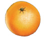
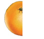
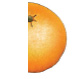
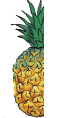

Tutambue nusu ya vitu halisi
Vipande viwili vya kitu kimoja vinavyolingana huunda
kitu kizima kimoja. Nusu ni kipande kimoja kati ya
vipande viwili vinavyolingana. Kwa mfano, unaweza
kukata chungwa katika vipande viwili vinavyolingana.
Kila kipande ni nusu ya lile chungwa.
Mfano wa kwanza
| Kitu kizima | Nusu ya kwanza | Nusu ya pili |
|---|
 |  |  |
| chungwa zima | nusu ya chungwa | nusu ya chungwa |
Mfano wa pili
| Kitu kizima | Nusu ya kwanza | Nusu ya pili |
|---|
 |  | |
| nanasi zima | nusu ya nanasi | nusu ya nanasi |